CSE 163 Final Project — Part 2: Exploratory Data Analysis
Author: David Gao Course: CSE 163, Autumn 2026
GitHub repository: https://github.com/David-Gao-uw/ev-equity-project
Washington forgoes revenue each year through EV tax exemptions, and a tax expenditure is a distributive choice: it matters who receives it. Those exemptions are capped by vehicle price, which mechanically steers the benefit toward buyers of higher-priced cars, and the practical prerequisites for owning an EV — charging access, home ownership — are themselves unevenly distributed. Whether the subsidy is therefore regressive is an empirical question answerable from registration and income records alone. The EDA below establishes the size of that gradient before any modelling, and it tests whether the “subsidy for the rich” story is as simple as it sounds.
All three are public, download as direct CSV links, and require no login or key. File sizes and row counts below are what this analysis actually downloaded on 18 November 2026; the transaction file has grown substantially since the proposal, which is noted in §8.
D1 — WA Dept. of Licensing, Electric Vehicle Population Data. One row per currently registered EV. 304,258 rows; 16 columns in the file, of which this EDA uses 10. https://data.wa.gov/api/views/f6w7-q2d2/rows.csv?accessType=DOWNLOAD
D2 — WA Dept. of Licensing, EV Title and Registration Activity. One row per title or registration event. 1,964,093 rows; 33 columns, of which this EDA uses 13. https://data.wa.gov/api/views/rpr4-cgyd/rows.csv?accessType=DOWNLOAD
D3 — IRS Statistics of Income, ZIP Code Data (TY2022). One row per ZIP and AGI bracket; 2,994 Washington rows across 165 columns, collapsed here to 499 ZIP codes with at least 100 tax returns. https://www.irs.gov/pub/irs-soi/22zpallagi.csv
The EDA proceeded in four passes, all implemented in
src/data.py and src/eda_report.py. First,
every file was loaded with explicit usecols and with
Postal Code typed as text so that leading zeros survive;
ZIP codes were normalised to five digits and anything that was not a
real ZIP became NA so joins could not match on a fake code.
Second, missingness was quantified per column with
DataFrame.isna(). Third, each dataset was profiled
separately: seven-number summaries for quantitative variables, value
counts for categorical ones, and two or more plots each. Fourth, each of
the three intended joins was built and profiled on its own terms —
coverage, distributions after the join, and the two plots required per
combination — and the assumptions behind the planned statistical tests
were checked explicitly rather than asserted.
One research question was revised because the data contradicted its premise. RQ2 originally asked whether used EVs reach lower-income ZIPs than new ones. The EDA shows that 84% of all registration events in D2 are used-vehicle transfers and that the used share is essentially flat across income quartiles (§6.5), so the new/used split cannot discriminate between income groups. RQ2 therefore now compares the BEV versus PHEV composition across income quartiles, which the joined data does support (§6.4). The proposal’s challenge goals are unaffected.
The analysed frame has 304,258 rows and 10 columns; each row is one
currently registered electric vehicle, and the columns describe where it
is registered, what it is, and how far it can go. Missingness is
negligible: df.isna().sum().sum() returns 137
missing cells out of 3,042,580 (0.005%), confined to 31 rows
lacking
County/Postal Code/2020 GEOID and
13 rows lacking Electric Range. Because the affected rows
also fail the ZIP normalisation, they drop out of every ZIP-level join
and need no imputation.
The variables of interest are Electric Vehicle Type (BEV
vs PHEV — the numerator of RQ2), Electric Range (RQ4’s
threshold variable), DOL Vehicle ID (the join key to D2),
Postal Code (the join key to D3), and
Model Year (adoption timing). Seven-number summaries and
value counts are in Table 1.
| Variable | mean | std | min | Q1 | median | Q3 | max |
|---|---|---|---|---|---|---|---|
Electric Range |
35.61 | 74.90 | 0 | 0 | 0 | 32 | 337 |
| Categorical variable | values with counts |
|---|---|
Electric Vehicle Type |
BEV 245,361 · PHEV 58,897 |
Table 1. Summary of D1 variables of interest (n = 304,245 for range).
Electric Range has a median of 0, which
is not a typo: many rows record zero because the battery range was never
researched, a pattern that repeats in D2 and directly affects RQ4
(§6.6).
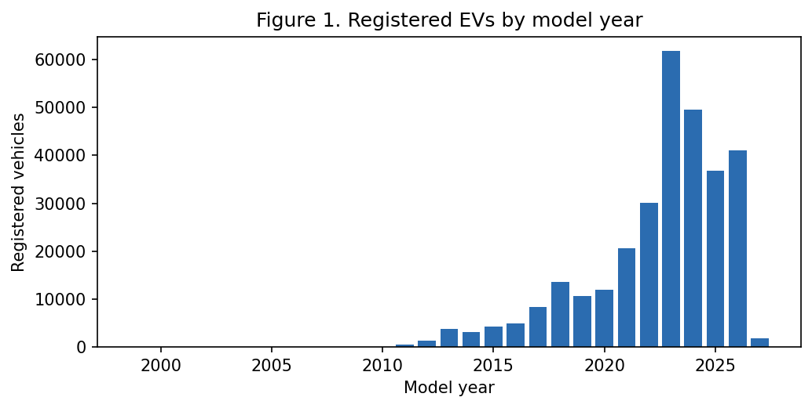
Figure 1 plots Model Year against the number of
registered vehicles. A bar chart is the right choice because model year
is discrete and the interesting signal is the change in volume across
years: registrations rise sharply after 2017, peak in the most recent
complete model years, and taper off for older vehicles that have left
the fleet. A reader should take away that the Washington fleet is young
— most EVs on the road were built in the last seven years.
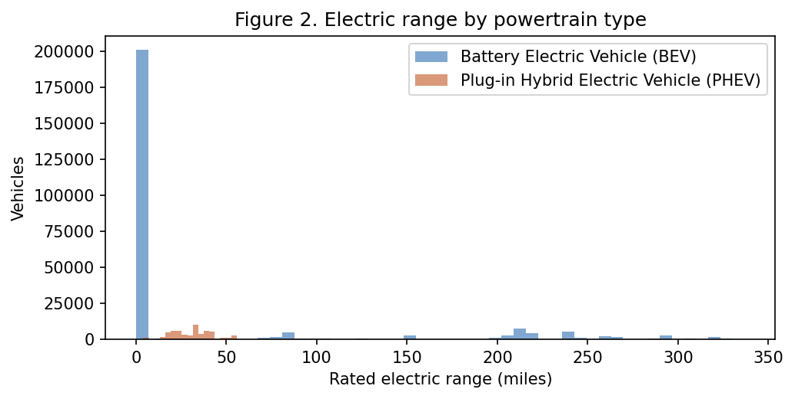
Figure 2 overlays histograms of Electric Range for BEVs
and PHEVs. Overlaying rather than stacking makes the two distributions
directly comparable; the PHEV mass sits at low range values (they carry
a combustion engine) while BEVs spread widely toward 300+ miles. The
visible spike at zero corresponds to the un-researched range values
noted above and is why RQ4 cannot simply trust the pre-computed HB 2042
flag.
The analysed frame has 1,964,093 rows and 13 columns; each row is one
title or registration event, so the same vehicle can appear many times.
Missingness is again tiny — 632 cells of 25,533,209
(0.002%) — with
County/Postal Code/ZIP missing in
195 rows, Electric Range in 46, and State in
one.
Variables of interest: New or Used Vehicle (the original
RQ2 split), Sale Price and Electric Range
(RQ4), Year/Transaction Type (RQ3), and
DOL Vehicle ID (join key to D1). Table 2 gives the
summaries.
| Variable | mean | std | min | Q1 | median | Q3 | max |
|---|---|---|---|---|---|---|---|
Sale Price (used, price > 0) |
30,223 | 62,672 | 1 | 16,700 | 25,995 | 37,991 | 12,312,016 |
| Categorical variable | values with counts |
|---|---|
New or Used Vehicle |
Used 1,649,762 · New 314,331 |
Table 2. Summary of D2 variables of interest (used-with-price n = 150,300).
Two facts here matter for later analysis. Only 150,300 of
1,649,762 used transactions (9.1%) record a positive
Sale Price, so RQ4 operates on a small, possibly
non-random subset. And the maximum recorded price of $12.3
million is not credible, so RQ4 needs an explicit outlier rule
rather than a silent mean.
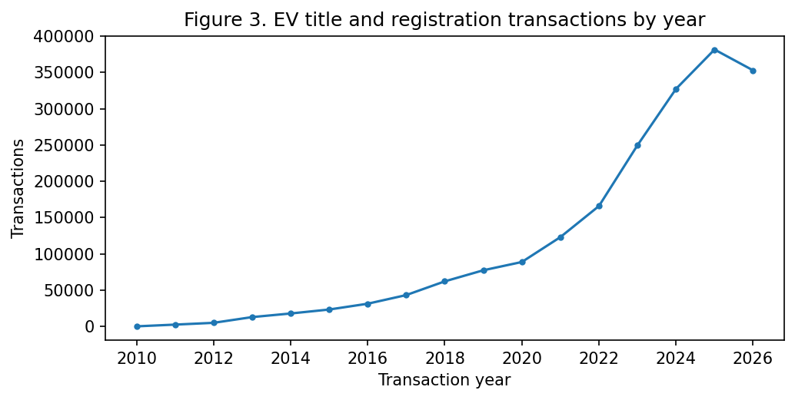
Figure 3 is a line plot of annual transaction counts, chosen because time is continuous here and the shape of growth matters more than exact levels. Volume rises steeply from 2011, peaks in 2025, and 2026 is visibly partial because the file ends mid-year — which is why RQ3 excludes incomplete years.
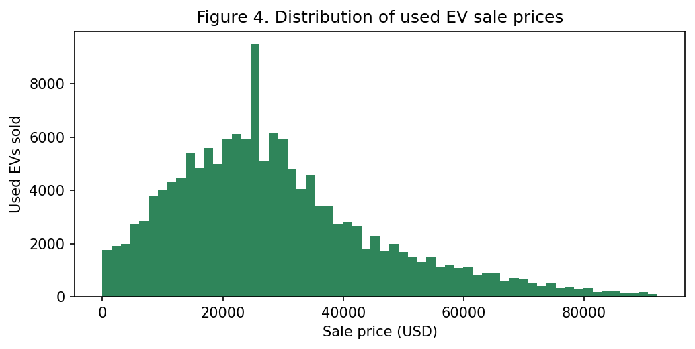
Figure 4 histograms Sale Price for used EVs after
trimming the top 1%. A histogram is appropriate for judging shape, and
the shape is strongly right-skewed — a property that determines the
choice of statistical test in §6.7.
The Washington subset has 2,994 rows and 33 columns, one row per ZIP
and AGI bracket, with no missing cells at all
(isna().sum().sum() == 0). Collapsing the brackets gives
499 ZIP codes with at least 100 returns. Variables of interest are
N1 (number of returns, used as the denominator) and
A00100 (total AGI in thousands), which together define
AVG_AGI, the RQ1 predictor.
| Variable | mean | std | min | Q1 | median | Q3 | max |
|---|---|---|---|---|---|---|---|
RETURNS per ZIP |
7,428 | 7,973 | 100 | 800 | 4,010 | 12,790 | 51,180 |
AVG_AGI (thousands USD) |
96.75 | 68.52 | 33.44 | 67.31 | 80.56 | 103.48 | 1,191.71 |
Table 3. Summary of D3 variables after collapsing to one row per ZIP (n = 499).
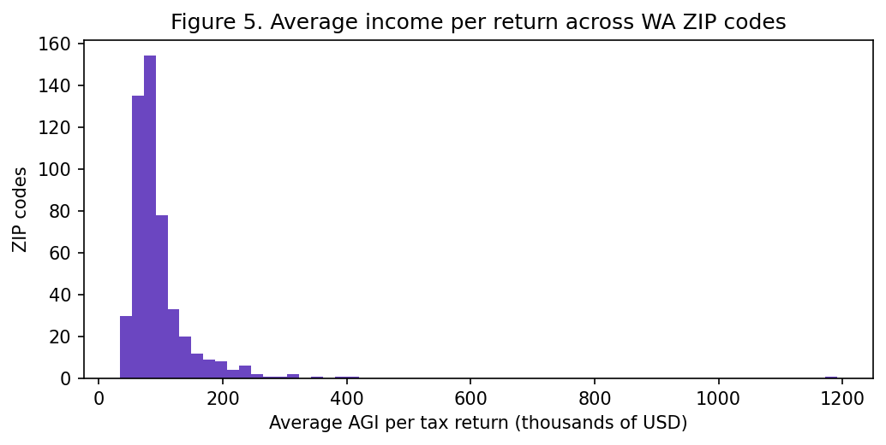
Figure 5 histograms AVG_AGI across ZIP codes. The
distribution has a long right tail (two ZIP codes exceed $600k average
AGI) and justifies the return-weighted quartiles used in §6.4: an
unweighted split would put a handful of tiny, very rich ZIPs into their
own quartile.
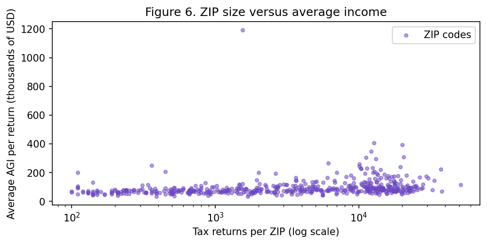
Figure 6 scatters RETURNS (log scale) against
AVG_AGI. The log x-axis is necessary because ZIP size spans
three orders of magnitude. The plot shows that small ZIPs produce the
extremes of average income on both ends, which is exactly why the
100-return threshold exists.
The two datasets are related through geography: D1 records a
vehicle’s Postal Code and D3 reports income by
zipcode, so the join is on ZIP after normalisation. This is
a many-to-one join — many vehicles per ZIP — and the analysis therefore
aggregates D1 to one row per ZIP before merging.
Coverage needs careful reporting. D1 spans 1,198 distinct ZIP codes while D3 keeps 499; the merge matches 491 ZIP codes, or 41.0% of EV ZIPs — a number that looks alarming until it is measured by rows: 99.5% of EV records carry a ZIP present in the income profile. The unmatched ZIPs are small rural codes that fell below the 100-return threshold. Row coverage, not ZIP coverage, is the relevant figure for RQ1.
| Variable (n = 491 ZIPs) | mean | std | min | Q1 | median | Q3 | max |
|---|---|---|---|---|---|---|---|
AVG_AGI (thousands USD) |
97.23 | 68.91 | 33.44 | 67.53 | 80.90 | 103.65 | 1,191.71 |
| EV per 1,000 returns | 70.50 | 148.30 | 1.52 | 26.88 | 48.39 | 86.46 | 3,127.78 |
Table 4. Summary of the joined D1 × D3 frame.
The answer to RQ1 is unambiguous. Spearman’s rho between
AVG_AGI and EVs per 1,000 returns is ρ =
0.775, and the median by quartile rises monotonically:
27.5 → 50.2 → 87.1 → 143.5 EVs per 1,000 returns from
the poorest to the richest quartile — a 5.2× spread. EV
ownership in Washington tracks income very closely at the ZIP level.
For RQ2, the BEV share of each quartile’s EVs rises from 75.7% in Q1 to 83.2% in Q4 (Cramér’s V = 0.067). The direction is consistent with richer buyers choosing full battery-electric cars over plug-in hybrids, but the effect is small relative to the ownership gradient: income predicts how many EVs a ZIP has far better than which kind.
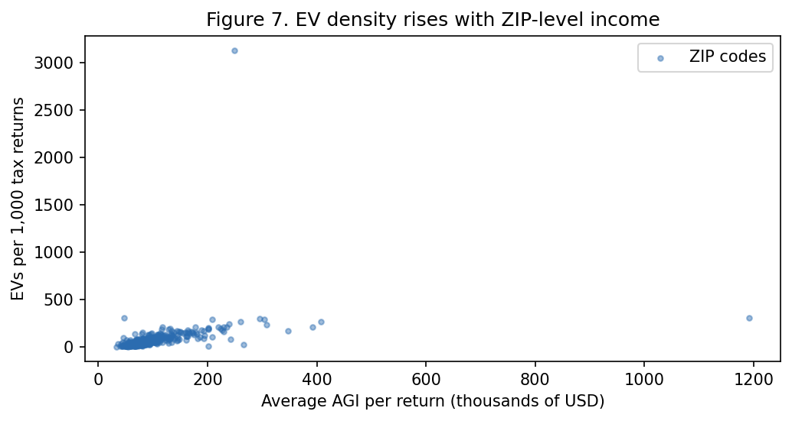
Figure 7 scatters AVG_AGI against EVs per 1,000 returns,
one point per ZIP. A scatter is chosen because both variables are
quantitative and the question is about the form of the relationship, not
a group difference. The upward trend is clear, dense, and monotone, with
heteroscedasticity at high income — a few very rich ZIPs reach extreme
EV density.
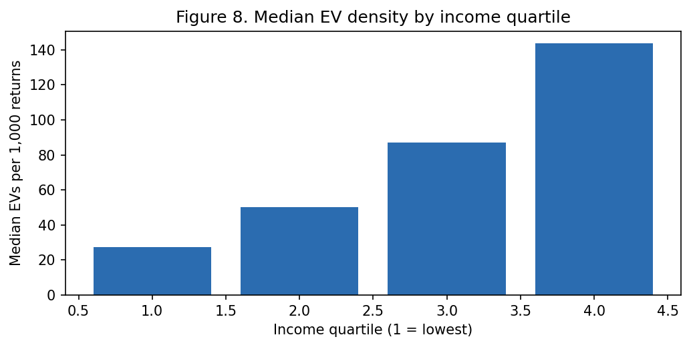
Figure 8 shows the median EV density per income quartile. Bars are appropriate for four ordered groups, and using medians rather than means keeps the two extreme ZIPs from dominating. The step pattern is the quantitative core of the equity claim.
D2 relates to D3 the same way D1 does, through
Postal Code; here registrations are counted per ZIP and
split by New or Used Vehicle before merging. D2 spans 2,778
distinct ZIPs, and 496 match the income profile — again
only 17.9% of ZIPs but 99.4% of transaction rows, since
99.6% of D2 rows are Washington addresses.
This join produced the finding that changed RQ2. The used share of registrations by income quartile is 84.7%, 84.6%, 84.7%, 83.2% — a spread of 1.5 percentage points. The chi-square test returns p ≈ 7 × 10⁻¹⁸², but Cramér’s V is 0.021, and the minimum expected cell count is 32,779. With two million rows, a 1.5-point difference is “significant” and substantively trivial: the new/used split carries almost no income information.
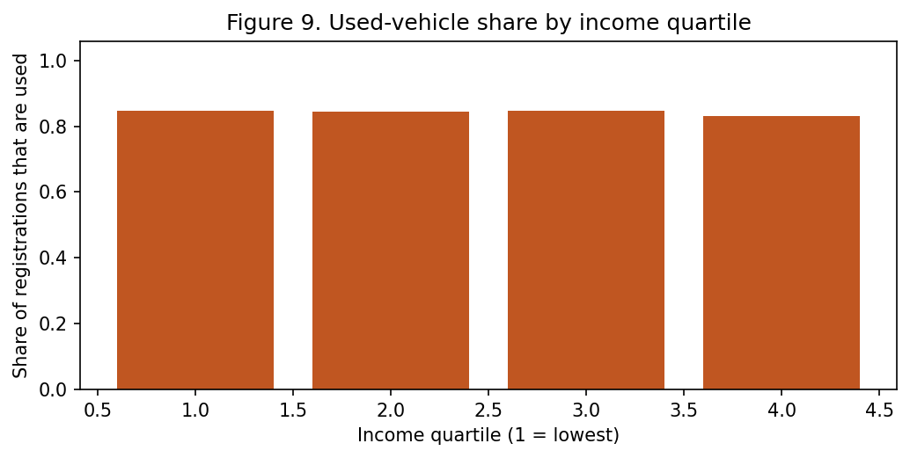
Figure 9 plots the used share per quartile with a zoomed y-axis. Zooming is deliberate: it makes the near-flatness visible, which is the finding. A reader should conclude that the used market is not disproportionately serving low-income ZIPs in this data.
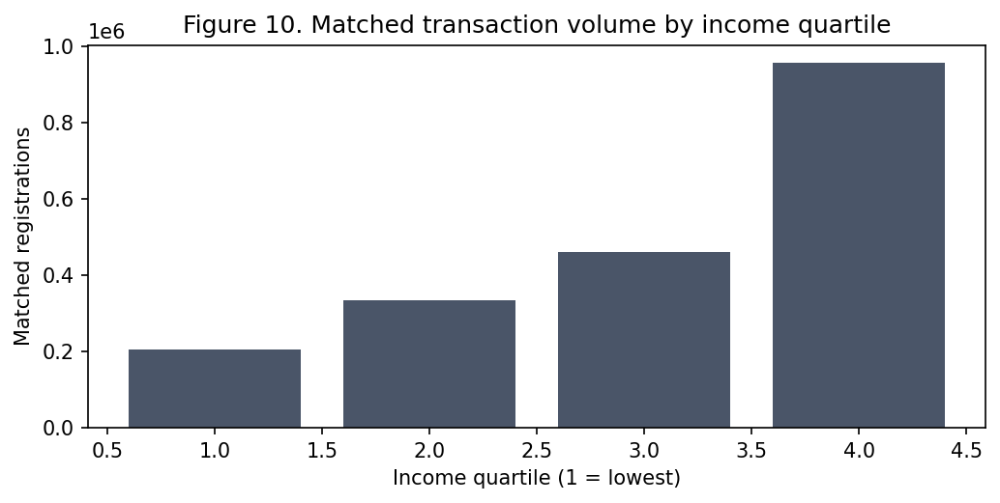
Figure 10 gives the number of matched registrations behind each quartile, so the reader can see that the flat used share is not an artefact of empty cells.
D1 and D2 are related by vehicle identity: both carry
DOL Vehicle ID, which is the only safe key because
VIN (1-10) is a shared prefix. D2 contains 407,930
distinct vehicle IDs, and all 304,258 currently
registered vehicles in D1 appear among them; conversely 74.6%
of transacted IDs appear in the current population. The remainder are
vehicles that have since left Washington’s fleet or been scrapped, which
is expected for a file spanning fifteen years.
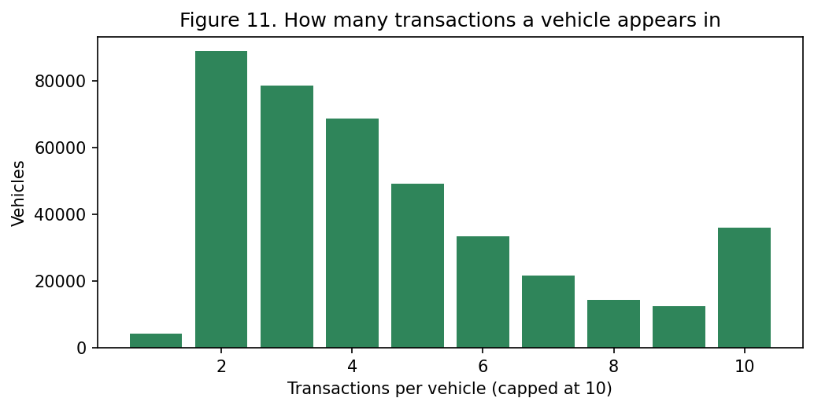
Figure 11 bar-charts the number of transactions per vehicle, capped at ten. Most vehicles appear once or twice; the capped tail is visible as a spike at 10. This tells the reader that D2 is event-level and that naively counting rows per vehicle would double-count resales.
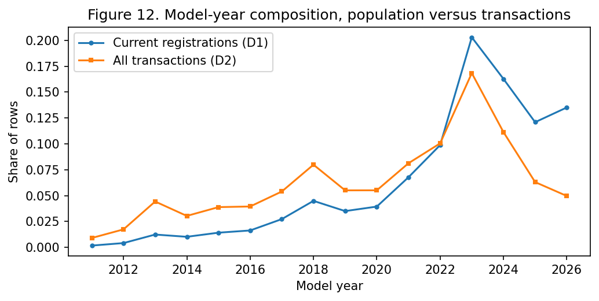
Figure 12 compares the model-year distribution of current registrations with that of all transactions, as shares so the two very different row counts are comparable. The transaction file is skewed toward older model years, as expected when it includes every historical resale.
Because this project claims Result Validity, Table 5 records the null hypothesis, test, and assumptions for each question, and what the EDA verified.
| RQ | Null hypothesis | Test | Assumptions | Verified in EDA? |
|---|---|---|---|---|
| RQ1 | ρ = 0: no monotonic association between ZIP income and EV density | Spearman + permutation (10,000 shuffles) | monotonic relationship; observations not independent | Monotone trend visible in Figure 7; ZIPs are spatially autocorrelated, so a permutation null is used rather than an asymptotic p-value |
| RQ2 | BEV/PHEV composition independent of income quartile | chi-square + Cramér’s V | expected count ≥ 5 per cell | Yes — minimum expected cell 32,779 (Table 6) |
| RQ4 | price distribution identical either side of the range threshold | Mann-Whitney U + OLS interaction | continuous skewed outcome; groups independent | Skewness 148.6 and kurtosis 25,909 confirm the U test is appropriate; the HB 2042 flag fails as a clean threshold (below) |
Table 5. Planned tests and the assumption checks performed in this EDA.
The RQ4 check produced the second important data-quality finding. The
Meets 2019 HB 2042 Electric Range Requirement flag is
not a clean function of Electric Range:
1,749,291 rows are flagged True yet have a median recorded
range of 0, while the 214,802 flagged
False rows have ranges between 1 and 29 miles. The flag
encodes eligibility rather than a range comparison, so RQ4 will use an
explicit Electric Range >= 30 rule and document that
choice.
Both goals from the proposal remain intact. Multiple Datasets is satisfied with three datasets and three joins, and this EDA measured each join’s coverage by rows rather than by keys (Table 6). Result Validity is satisfied by the tests in Table 5, whose assumptions have now been checked against the data rather than assumed. No goal was scaled back; RQ2’s revision changes the variable, not the difficulty.
| Join | Key coverage | Row coverage | Notes |
|---|---|---|---|
| D1 × D3 | 491 / 1,198 ZIPs (41.0%) | 99.5% of EV rows | unmatched ZIPs are small rural codes |
| D2 × D3 | 496 / 2,778 ZIPs (17.9%) | 99.4% of transaction rows | 99.6% of rows are WA addresses |
| D2 × D1 | 304,258 / 407,930 vehicle IDs | 100% of D1 IDs | remainder left the fleet |
Table 6. Join coverage, aggregated by rows rather than keys.
The estimates were badly off in one direction. Tasks 1 and 2 (downloaders, loaders, cleaning) were budgeted at 10 hours; in practice the download took about three minutes of wall time and the loaders were written and debugged in roughly an hour, because the data was far cleaner than anticipated — 0.005% and 0.002% missingness meant no imputation strategy was needed. Task 3 (EDA) was budgeted at 4 hours and took about 2.5.
The estimate was wrong for a specific reason worth recording: the proposal assumed messy data would dominate the effort, but these are well-curated government exports. The remaining work is tasks 4–6 as planned — RQ1/RQ2 analyses with the permutation and chi-square tests, RQ3/RQ4 including the OLS model, then figures and report — which I now estimate at 20 hours, not 17, because RQ2’s revision adds a join-level comparison and RQ4 needs an explicit threshold rule plus an outlier policy for the $12.3 million price.
One new risk: D2 has grown from 258 MB at proposal time to 952 MB now. The download script pins expected sizes and flags changes, and it did flag this one, so the growth is documented rather than silent.
Testing followed the principle that the dangerous failures in this
project are silent: a join that matches nothing, or a ZIP normalisation
that quietly turns 98004 into 9804 and drops a
fifth of the rows, would still “run” and still produce a
plausible-looking report.
Three mechanisms guard against that. First,
tests/test_data.py uses pytest with hand-built
frames of known content to assert the exact behaviour of
normalize_zip (including leading zeros, 00000,
empty strings, and float-formatted input), of zip_ev_counts
(that duplicates collapse by vehicle rather than by row), of
income_profile (that the 100-return threshold is applied),
and of add_income_quartile (that quartiles are
return-weighted and cover all rows). Second, the loaders carry explicit
usecols lists, so a renamed upstream column raises
KeyError instead of silently returning NaNs.
Third, the analysis script writes every number it computes to
notes/eda_stats.json, and the report quotes those values,
so prose cannot drift from computation.
All assertions are in the test file and run with
pytest tests/. I also verified the two headline numbers
independently by a different route — recomputing the quartile medians
from the raw CSVs with a separate query and comparing.
Resources consulted beyond course staff: the Washington DOL open-data
documentation for field definitions, the IRS Statistics of Income
documentation for the meaning of A00100 and
agi_stub, and the
pandas/scipy/statsmodels
reference documentation. I used an AI coding assistant to scaffold the
loader modules and to help edit prose in this report; all analysis
decisions, interpretation, and the accuracy of every reported number are
my responsibility, and the numbers in this report are reproducible from
the code in the repository.